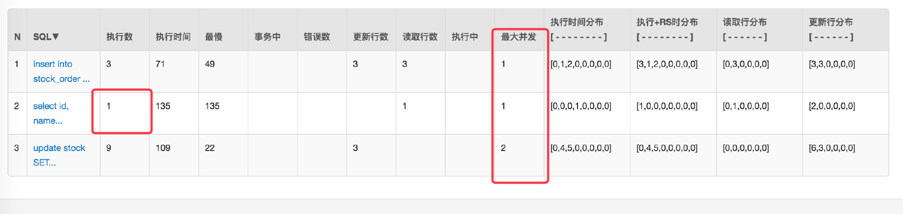

SSM(十八) 秒杀架构实践
前言
本次采用循序渐进的方式逐步提高性能达到并发秒杀的效果
最终架构图：
先简单根据这个图谈下请求的流转，因为后面不管怎么改进这个都是没有变的。
- 前端请求进入
web层，对应的代码就是controller。 - 之后将真正的库存校验、下单等请求发往
Service层（其中 RPC 调用依然采用的dubbo，只是更新为最新版本，本次不会过多讨论 dubbo 相关的细节）。 Service层再对数据进行落地，下单完成。
无限制
其实抛开秒杀这个场景来说正常的一个下单流程可以简单分为以下几步：
- 校验库存
- 扣库存
- 创建订单
- 支付
基于上文的架构所以我们有了以下实现：
先看看实际项目的结构：
还是和以前一样：
- 提供出一个
API用于Service层实现，以及web层消费。 - web 层简单来说就是一个
SpringMVC。 Service层则是真正的数据落地。SSM-SECONDS-KILL-ORDER-CONSUMER则是后文会提到的Kafka消费。
数据库也是只有简单的两张表模拟下单：
CREATE TABLE \`stock\` (
\`id\` int(11) unsigned NOT NULL AUTO_INCREMENT,
\`name\` varchar(50) NOT NULL DEFAULT '' COMMENT '名称',
\`count\` int(11) NOT NULL COMMENT '库存',
\`sale\` int(11) NOT NULL COMMENT '已售',
\`version\` int(11) NOT NULL COMMENT '乐观锁，版本号',
PRIMARY KEY (\`id\`)
) ENGINE=InnoDB AUTO_INCREMENT=2 DEFAULT CHARSET=utf8;
CREATE TABLE \`stock_order\` (
\`id\` int(11) unsigned NOT NULL AUTO_INCREMENT,
\`sid\` int(11) NOT NULL COMMENT '库存ID',
\`name\` varchar(30) NOT NULL DEFAULT '' COMMENT '商品名称',
\`create_time\` timestamp NOT NULL DEFAULT CURRENT_TIMESTAMP ON UPDATE CURRENT_TIMESTAMP COMMENT '创建时间',
PRIMARY KEY (\`id\`)
) ENGINE=InnoDB AUTO_INCREMENT=55 DEFAULT CHARSET=utf8;
web 层 controller 实现:
@Autowired
private StockService stockService;
@Autowired
private OrderService orderService;
@RequestMapping("/createWrongOrder/{sid}")
@ResponseBody
public String createWrongOrder(@PathVariable int sid) {
logger.info("sid=\[{}\]", sid);
int id = 0;
try {
id = orderService.createWrongOrder(sid);
} catch (Exception e) {
logger.error("Exception",e);
}
return String.valueOf(id);
}
其中 web 作为一个消费者调用看 OrderService 提供出来的 dubbo 服务。
Service 层，OrderService 实现：
首先是对 API 的实现(会在 API 提供出接口)：
@Service
public class OrderServiceImpl implements OrderService {
@Resource(name = "DBOrderService")
private com.crossoverJie.seconds.kill.service.OrderService orderService ;
@Override
public int createWrongOrder(int sid) throws Exception {
return orderService.createWrongOrder(sid);
}
}
这里只是简单调用了 DBOrderService 中的实现，DBOrderService 才是真正的数据落地，也就是写数据库了。
DBOrderService 实现：
Transactional(rollbackFor = Exception.class)
@Service(value = “DBOrderService”)
public class OrderServiceImpl implements OrderService {
@Resource(name = "DBStockService")
private com.crossoverJie.seconds.kill.service.StockService stockService;
@Autowired
private StockOrderMapper orderMapper;
@Override
public int createWrongOrder(int sid) throws Exception{
//校验库存
Stock stock = checkStock(sid);
//扣库存
saleStock(stock);
//创建订单
int id = createOrder(stock);
return id;
}
private Stock checkStock(int sid) {
Stock stock = stockService.getStockById(sid);
if (stock.getSale().equals(stock.getCount())) {
throw new RuntimeException("库存不足");
}
return stock;
}
private int saleStock(Stock stock) {
stock.setSale(stock.getSale() + 1);
return stockService.updateStockById(stock);
}
private int createOrder(Stock stock) {
StockOrder order = new StockOrder();
order.setSid(stock.getId());
order.setName(stock.getName());
int id = orderMapper.insertSelective(order);
return id;
}
}
预先初始化了 10 条库存。
手动调用下 createWrongOrder/1 接口发现：
库存表：
订单表：
一切看起来都没有问题，数据也正常。
但是当用 JMeter 并发测试时：
测试配置是：300个线程并发，测试两轮来看看数据库中的结果：
请求都响应成功，库存确实也扣完了，但是订单却生成了 124 条记录。
这显然是典型的超卖现象。
其实现在再去手动调用接口会返回库存不足，但为时晚矣。
乐观锁更新
怎么来避免上述的现象呢？
最简单的做法自然是乐观锁了，这里不过多讨论这个，不熟悉的朋友可以看下这篇。
来看看具体实现：
其实其他的都没怎么改，主要是 Service 层。
@Override
public int createOptimisticOrder(int sid) throws Exception {
//校验库存
Stock stock = checkStock(sid);
//乐观锁更新库存
saleStockOptimistic(stock);
//创建订单
int id = createOrder(stock);
return id;
}
private void saleStockOptimistic(Stock stock) {
int count = stockService.updateStockByOptimistic(stock);
if (count == 0){
throw new RuntimeException("并发更新库存失败") ;
}
}
对应的 XML：
<update id="updateByOptimistic" parameterType="com.crossoverJie.seconds.kill.pojo.Stock">
update stock
<set>
sale = sale + 1,
version = version + 1,
</set>
WHERE id = #{id,jdbcType=INTEGER}
AND version = #{version,jdbcType=INTEGER}
</update>
同样的测试条件，我们再进行上面的测试 /createOptimisticOrder/1：
这次发现无论是库存订单都是 OK 的。
查看日志发现：
很多并发请求会响应错误，这就达到了效果。
提高吞吐量
为了进一步提高秒杀时的吞吐量以及响应效率，这里的 web 和 Service 都进行了横向扩展。
- web 利用 Nginx 进行负载。
- Service 也是多台应用。
再用 JMeter 测试时可以直观的看到效果。
由于我是在阿里云的一台小水管服务器进行测试的，加上配置不高、应用都在同一台，所以并没有完全体现出性能上的优势（
Nginx做负载转发时候也会增加额外的网络消耗）。
shell 脚本实现简单的 CI
由于应用多台部署之后，手动发版测试的痛苦相信经历过的都有体会。
这次并没有精力去搭建完整的 CI CD，只是写了一个简单的脚本实现了自动化部署，希望对这方面没有经验的同学带来一点启发：
构建 web
#!/bin/bash
\# 构建 web 消费者
#read appname
appname="consumer"
echo "input="$appname
PID=$(ps -ef | grep $appname | grep -v grep | awk '{print $2}')
\# 遍历杀掉 pid
for var in ${PID\[@\]};
do
echo "loop pid= $var"
kill -9 $var
done
echo "kill $appname success"
cd ..
git pull
cd SSM-SECONDS-KILL
mvn -Dmaven.test.skip=true clean package
echo "build war success"
cp /home/crossoverJie/SSM/SSM-SECONDS-KILL/SSM-SECONDS-KILL-WEB/target/SSM-SECONDS-KILL-WEB-2.2.0-SNAPSHOT.war /home/crossoverJie/tomcat/tomcat-dubbo-consumer-8083/webapps
echo "cp tomcat-dubbo-consumer-8083/webapps ok!"
cp /home/crossoverJie/SSM/SSM-SECONDS-KILL/SSM-SECONDS-KILL-WEB/target/SSM-SECONDS-KILL-WEB-2.2.0-SNAPSHOT.war /home/crossoverJie/tomcat/tomcat-dubbo-consumer-7083-slave/webapps
echo "cp tomcat-dubbo-consumer-7083-slave/webapps ok!"
sh /home/crossoverJie/tomcat/tomcat-dubbo-consumer-8083/bin/startup.sh
echo "tomcat-dubbo-consumer-8083/bin/startup.sh success"
sh /home/crossoverJie/tomcat/tomcat-dubbo-consumer-7083-slave/bin/startup.sh
echo "tomcat-dubbo-consumer-7083-slave/bin/startup.sh success"
echo "start $appname success"
构建 Service
\# 构建服务提供者
#read appname
appname="provider"
echo "input="$appname
PID=$(ps -ef | grep $appname | grep -v grep | awk '{print $2}')
#if \[ $? -eq 0 \]; then
\# echo "process id:$PID"
#else
\# echo "process $appname not exit"
\# exit
#fi
\# 遍历杀掉 pid
for var in ${PID\[@\]};
do
echo "loop pid= $var"
kill -9 $var
done
echo "kill $appname success"
cd ..
git pull
cd SSM-SECONDS-KILL
mvn -Dmaven.test.skip=true clean package
echo "build war success"
cp /home/crossoverJie/SSM/SSM-SECONDS-KILL/SSM-SECONDS-KILL-SERVICE/target/SSM-SECONDS-KILL-SERVICE-2.2.0-SNAPSHOT.war /home/crossoverJie/tomcat/tomcat-dubbo-provider-8080/webapps
echo "cp tomcat-dubbo-provider-8080/webapps ok!"
cp /home/crossoverJie/SSM/SSM-SECONDS-KILL/SSM-SECONDS-KILL-SERVICE/target/SSM-SECONDS-KILL-SERVICE-2.2.0-SNAPSHOT.war /home/crossoverJie/tomcat/tomcat-dubbo-provider-7080-slave/webapps
echo "cp tomcat-dubbo-provider-7080-slave/webapps ok!"
sh /home/crossoverJie/tomcat/tomcat-dubbo-provider-8080/bin/startup.sh
echo "tomcat-dubbo-provider-8080/bin/startup.sh success"
sh /home/crossoverJie/tomcat/tomcat-dubbo-provider-7080-slave/bin/startup.sh
echo "tomcat-dubbo-provider-8080/bin/startup.sh success"
echo "start $appname success"
之后每当我有更新，只需要执行这两个脚本就可以帮我自动构建。
都是最基础的 Linux 命令，相信大家都看得明白。
乐观锁更新 + 分布式限流
上文的结果看似没有问题，其实还差得远呢。
这里只是模拟了 300 个并发没有问题，但是当请求达到了 3000 ，3W，300W 呢？
虽说可以横向扩展可以支撑更多的请求。
但是能不能利用最少的资源解决问题呢？
其实仔细分析下会发现：
假设我的商品一共只有 10 个库存，那么无论你多少人来买其实最终也最多只有 10 人可以下单成功。
所以其中会有 99% 的请求都是无效的。
大家都知道：大多数应用数据库都是压倒骆驼的最后一根稻草。
通过 Druid 的监控来看看之前请求数据库的情况：
因为 Service 是两个应用。
数据库也有 20 多个连接。
怎么样来优化呢？
其实很容易想到的就是[分布式限流]。
我们将并发控制在一个可控的范围之内，然后快速失败这样就能最大程度的保护系统。
distributed-redis-tool ⬆️v1.0.3
因为加上该组件之后所有的请求都会经过 Redis，所以对 Redis 资源的使用也是要非常小心。
API 更新
修改之后的 API 如下：
@Configuration
public class RedisLimitConfig {
private Logger logger = LoggerFactory.getLogger(RedisLimitConfig.class);
@Value("${redis.limit}")
private int limit;
@Autowired
private JedisConnectionFactory jedisConnectionFactory;
@Bean
public RedisLimit build() {
RedisLimit redisLimit = new RedisLimit.Builder(jedisConnectionFactory, RedisToolsConstant.SINGLE)
.limit(limit)
.build();
return redisLimit;
}
}
这里构建器改用了 JedisConnectionFactory，所以得配合 Spring 来一起使用。
并在初始化时显示传入 Redis 是以集群方式部署还是单机（强烈建议集群，限流之后对 Redis 还是有一定的压力）。
限流实现
既然 API 更新了，实现自然也要修改：
/**
\* limit traffic
\* @return if true
*/
public boolean limit() {
//get connection
Object connection = getConnection();
Object result = limitRequest(connection);
if (FAIL_CODE != (Long) result) {
return true;
} else {
return false;
}
}
private Object limitRequest(Object connection) {
Object result = null;
String key = String.valueOf(System.currentTimeMillis() / 1000);
if (connection instanceof Jedis){
result = ((Jedis)connection).eval(script, Collections.singletonList(key), Collections.singletonList(String.valueOf(limit)));
((Jedis) connection).close();
}else {
result = ((JedisCluster) connection).eval(script, Collections.singletonList(key), Collections.singletonList(String.valueOf(limit)));
try {
((JedisCluster) connection).close();
} catch (IOException e) {
logger.error("IOException",e);
}
}
return result;
}
private Object getConnection() {
Object connection ;
if (type == RedisToolsConstant.SINGLE){
RedisConnection redisConnection = jedisConnectionFactory.getConnection();
connection = redisConnection.getNativeConnection();
}else {
RedisClusterConnection clusterConnection = jedisConnectionFactory.getClusterConnection();
connection = clusterConnection.getNativeConnection() ;
}
return connection;
}
如果是原生的 Spring 应用得采用 @SpringControllerLimit(errorCode = 200) 注解。
实际使用如下：
web 端：
/**
\* 乐观锁更新库存 限流
\* @param sid
\* @return
*/
@SpringControllerLimit(errorCode = 200)
@RequestMapping("/createOptimisticLimitOrder/{sid}")
@ResponseBody
public String createOptimisticLimitOrder(@PathVariable int sid) {
logger.info("sid=\[{}\]", sid);
int id = 0;
try {
id = orderService.createOptimisticOrder(sid);
} catch (Exception e) {
logger.error("Exception",e);
}
return String.valueOf(id);
}
Service 端就没什么更新了，依然是采用的乐观锁更新数据库。
再压测看下效果 /createOptimisticLimitOrderByRedis/1：
首先是看结果没有问题，再看数据库连接以及并发请求数都有明显的下降。
乐观锁更新 + 分布式限流 + Redis 缓存
其实仔细观察 Druid 监控数据发现这个 SQL 被多次查询：
其实这是实时查询库存的 SQL，主要是为了在每次下单之前判断是否还有库存。
这也是个优化点。
这种数据我们完全可以放在内存中，效率比在数据库要高很多。
由于我们的应用是分布式的，所以堆内缓存显然不合适，Redis 就非常适合。
这次主要改造的是 Service 层：
- 每次查询库存时走 Redis。
- 扣库存时更新 Redis。
- 需要提前将库存信息写入 Redis（手动或者程序自动都可以）。
主要代码如下：
@Override
public int createOptimisticOrderUseRedis(int sid) throws Exception {
//检验库存，从 Redis 获取
Stock stock = checkStockByRedis(sid);
//乐观锁更新库存 以及更新 Redis
saleStockOptimisticByRedis(stock);
//创建订单
int id = createOrder(stock);
return id ;
}
private Stock checkStockByRedis(int sid) throws Exception {
Integer count = Integer.parseInt(redisTemplate.opsForValue().get(RedisKeysConstant.STOCK_COUNT + sid));
Integer sale = Integer.parseInt(redisTemplate.opsForValue().get(RedisKeysConstant.STOCK_SALE + sid));
if (count.equals(sale)){
throw new RuntimeException("库存不足 Redis currentCount=" \+ sale);
}
Integer version = Integer.parseInt(redisTemplate.opsForValue().get(RedisKeysConstant.STOCK_VERSION + sid));
Stock stock = new Stock() ;
stock.setId(sid);
stock.setCount(count);
stock.setSale(sale);
stock.setVersion(version);
return stock;
}
/**
\* 乐观锁更新数据库 还要更新 Redis
\* @param stock
*/
private void saleStockOptimisticByRedis(Stock stock) {
int count = stockService.updateStockByOptimistic(stock);
if (count == 0){
throw new RuntimeException("并发更新库存失败") ;
}
//自增
redisTemplate.opsForValue().increment(RedisKeysConstant.STOCK_SALE + stock.getId(),1) ;
redisTemplate.opsForValue().increment(RedisKeysConstant.STOCK_VERSION + stock.getId(),1) ;
}
压测看看实际效果 /createOptimisticLimitOrderByRedis/1：

最后发现数据没问题，数据库的请求与并发也都下来了。
乐观锁更新 + 分布式限流 + Redis 缓存 + Kafka 异步
最后的优化还是想如何来再次提高吞吐量以及性能的。
我们上文所有例子其实都是同步请求，完全可以利用同步转异步来提高性能啊。
这里我们将写订单以及更新库存的操作进行异步化，利用 Kafka 来进行解耦和队列的作用。
每当一个请求通过了限流到达了 Service 层通过了库存校验之后就将订单信息发给 Kafka ，这样一个请求就可以直接返回了。
消费程序再对数据进行入库落地。
因为异步了，所以最终需要采取回调或者是其他提醒的方式提醒用户购买完成。
总结
其实经过上面的一顿优化总结起来无非就是以下几点：
- 尽量将请求拦截在上游。
- 还可以根据 UID 进行限流。
- 最大程度的减少请求落到 DB。
- 多利用缓存。
- 同步操作异步化。
- fail fast，尽早失败，保护应用。